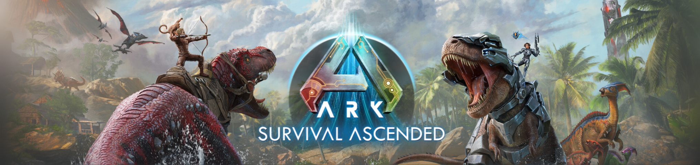
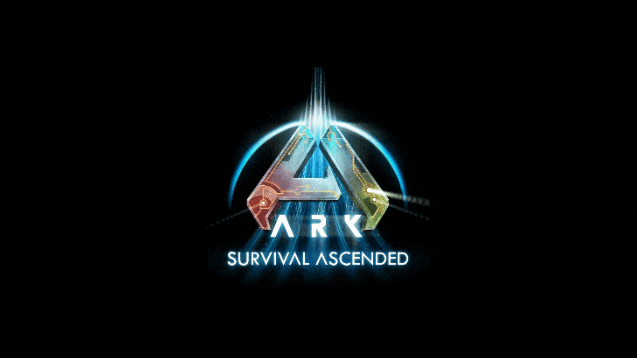

Main
Info
Highlights
Player
Support

Ark: Survival Ascended
Ark: Survival Ascended ist die neueste Version des
beliebten Survival-Spiels Ark: Survival Evolved und
bringt zahlreiche Verbesserungen und neue Features.
Es handelt sich um ein Remake des ursprünglichen Spiels,
das jetzt mit Unreal Engine 5 entwickelt wurde und beeindruckende
grafische Updates bietet, die detailliertere Umgebungen, bessere
Beleuchtung und realistischere Animationen ermöglichen.

In Ark: Survival Ascended schlüpfen Spieler weiterhin in die Rolle eines Überlebenden auf einer Insel
voller Dinosaurier und anderer prähistorischer Kreaturen. Das Ziel ist es, zu überleben, Ressourcen zu
sammeln, eine Basis zu bauen, Kreaturen zu zähmen und mit anderen Spielern zu interagieren. Ein
großer Unterschied zur Vorgängerversion ist die verbesserte KI der Kreaturen, die nun Hindernissen
besser ausweichen können. Zudem gibt es ein neues Bausystem, das das Platzieren von Strukturen
erleichtert, und eine Foto-Modus-Funktion für beeindruckende Schnappschüsse in der Wildnis.
Zusätzlich zur Kernmechanik wurde auch die Benutzeroberfläche überarbeitet, um ein immersiveres
Spielerlebnis zu bieten. Auch das Taming-System wurde angepasst, so dass jetzt Baby-Dinosaurier
gefunden und direkt „beansprucht“ werden können. Während Ark: Survival Evolved verschiedene
DLCs und Karten erforderte, wird Ark: Survival Ascended diese Inhalte im Spielverlauf hinzufügen,
ohne dass sie separat gekauft werden müssen. Die neue Version enthält ebenfalls eine Story, die
Spieler durch die verschiedenen Regionen und DLCs führen wird und tiefer in die
Hintergrundgeschichte der Spielwelt eintaucht.
Da sich das Spiel derzeit in der Early-Access-Phase befindet, können noch Fehler und Abstürze
auftreten, aber die Entwickler haben geplant, alle Inhalte aus dem Vorgänger sowie neue Kreaturen
und Mechaniken hinzuzufügen. Ark: Survival Ascended kombiniert somit das bekannte
Überlebenserlebnis mit moderner Grafik und neuen Spielmechaniken und bietet Fans und neuen
Spielern eine frische und verbesserte Spielerfahrung.
Server infos unter
Info
Externe Links
Auf Instant Gaming
Kaufen
Auf Steam
Kaufen
Dododex
Infos
Weitere Infos im
Ark Wiki